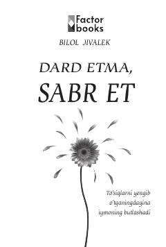

DEDard va sinovlarni sabr hamda tavakkul bilan yengib o'tish yo'llari haqida ta'sirli esse.
Mazkur kitob inson hayotida uchraydigan qiyinchiliklar, dard va tashvishlarni sabr hamda tavakkul orqali qanday yengib o'tish mumkinligi haqida hikoya qiladi. Muallif qalb xastaliklariga davo topish, iymonni mustahkamlash va Allohga bo'lgan ishonchni kuchaytirish borasida hayotiy maslahatlar beradi. Asar kitobxonga ruhiy sokinlik va qiyinchiliklarga bardosh berish ko'nikmalarini ulashadi.